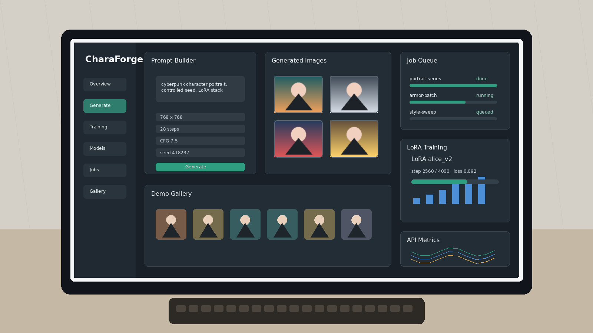
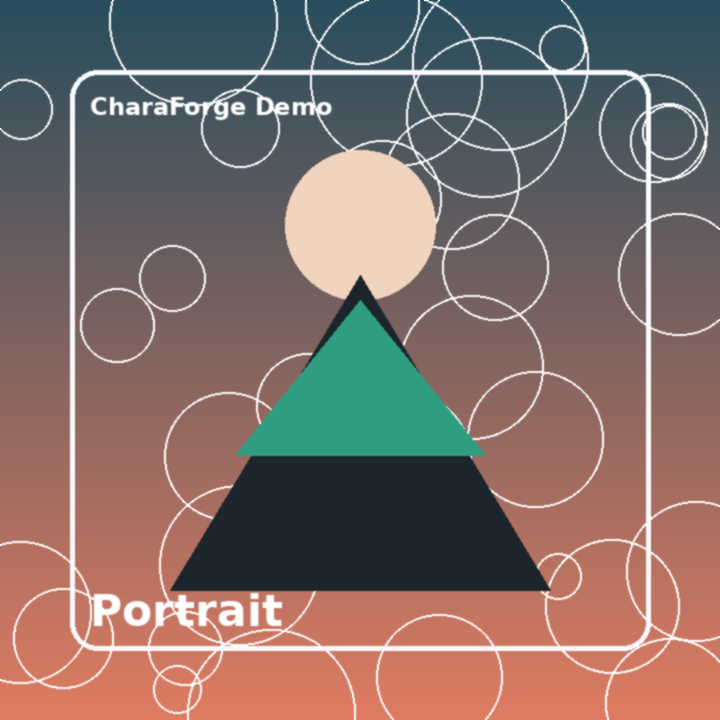
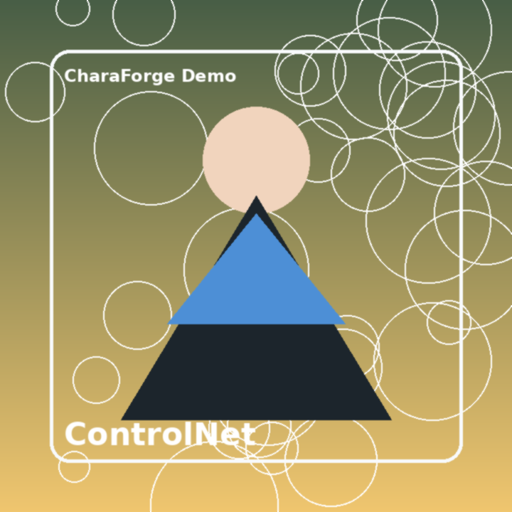
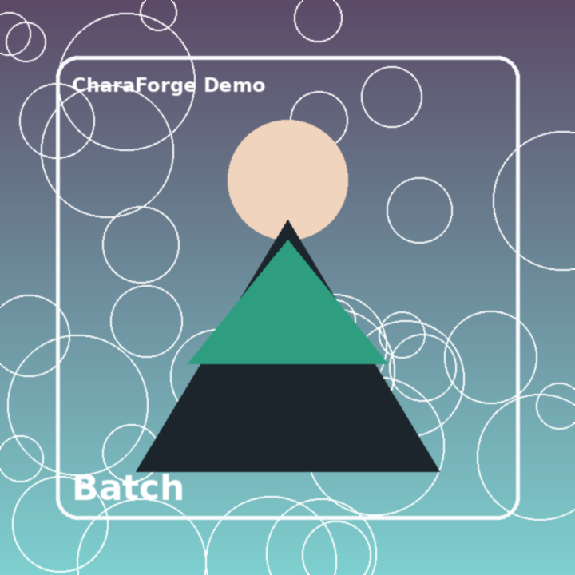
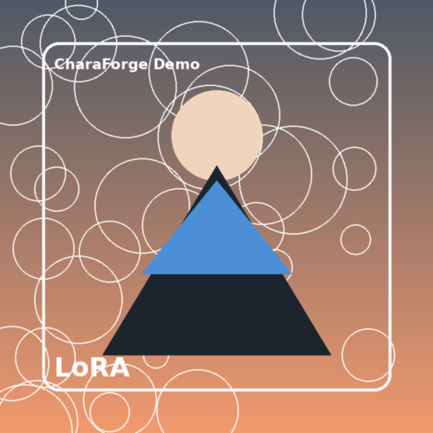
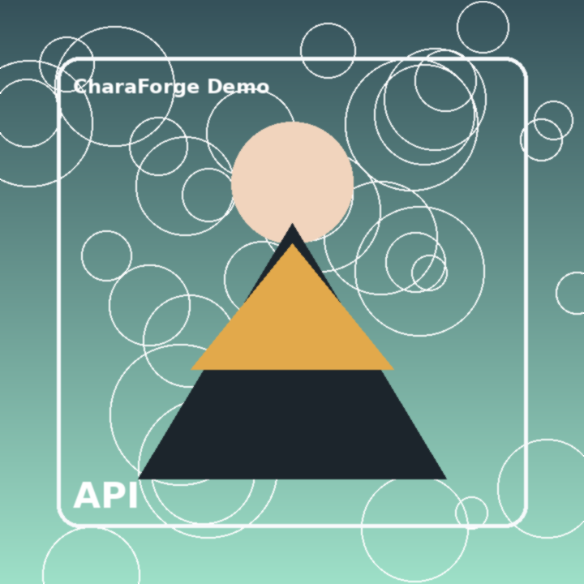

Recorded walkthrough
A compact portfolio recording that shows the dashboard overview, generation result, ControlNet state, batch queue, LoRA training monitor, and API/job contract.
Portfolio case study · Static GitHub Pages demo
This demo shows the product experience and engineering design behind a FastAPI + React platform for text-to-image generation, model registry scans, async GPU jobs, LoRA fine-tuning, and secured training progress streams.

Interactive walkthrough
Pick a scenario to update the workspace. The flow is intentionally static so it works on GitHub Pages without GPU, Redis, model weights, or backend secrets.
Submit a reproducible image job with a controlled seed and LoRA stack.

Screenshots and recording demo
This section gives interviewers a complete visual tour without requiring local setup. The recording and screenshots are committed with the static site, so they work directly from github.io.
A compact portfolio recording that shows the dashboard overview, generation result, ControlNet state, batch queue, LoRA training monitor, and API/job contract.




System design
The public demo is static, but the repository contains a working backend shape for local GPU usage: API auth, model registry, dataset validation, async jobs, workers, and output cleanup.
API keys, JWT refresh cookies, CSRF checks, scoped keys, request IDs, and rate-limit buckets.
T2I and model-scan jobs support queued/running/succeeded/failed/canceled states.
Dataset validation, LoRA config presets, Celery progress, Redis PubSub, and WebSocket updates.
Filesystem scanning for SD1.5, SDXL, ControlNet, LoRA, embeddings, and usage metadata.
Technical stack
Reviewer guide
Use this page for quick visual review. Use the repository README for local backend setup when GPU/model access is available.
/docs for the full contract.